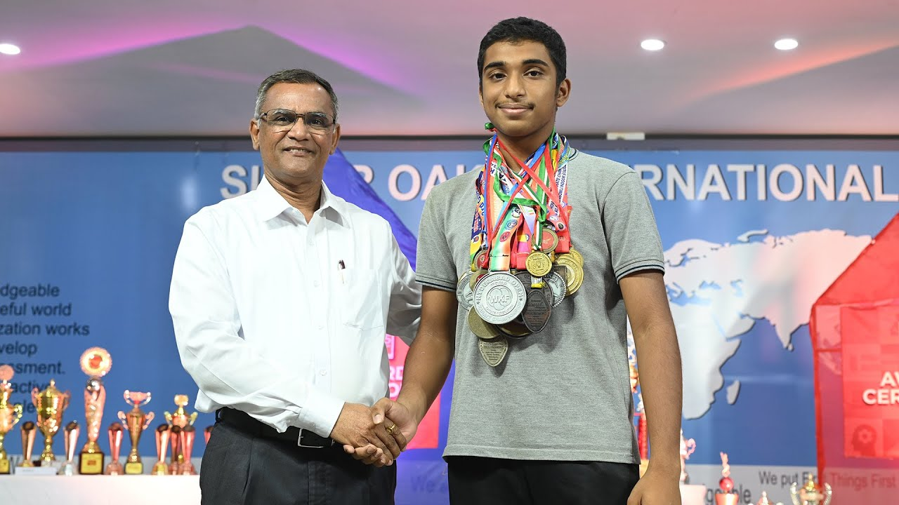

Intro
Hey! Im sarvagna, right now studying in GRADE 10 WINGED ARROWS (H). I'm an international karate athelete with interests into various fields such as playing piano, badminton, volleyball etc. I'm also a NCC Cadet who has got into various camps such as the IUC(Inter Unit Camp), PRE-IGC(Inter Group Competetions) AND AITC (All India Trekking Camp).
I've been studying in this school from the past 9 years now and also have inculcated different attitudes and attributes throught my journey. From the lockdown, our school has been taking up the idea of PROJECT GRADUATION. Project Graduation is a type of graduation in which we show our learning and understandings in the form of a website. We've practicing this type of graduation from grade 6 which helps us to reflect and re-think our understandings throught the learning year.So, this is the learning of my year in GRADE 9 (23-24).